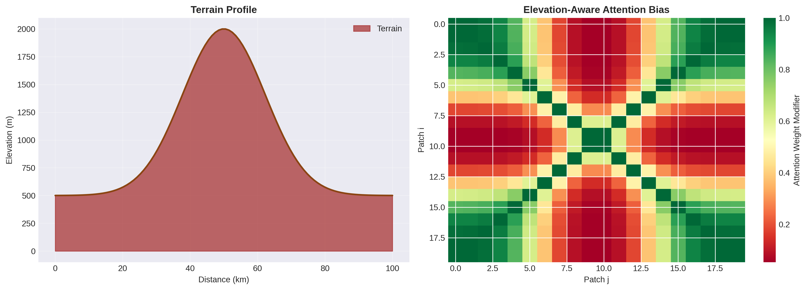

Method
🌬️ Wind-Following Scan Order
Traditional Vision Transformers use fixed scan orders (raster, Hilbert) that ignore atmospheric flow. TopoFlow dynamically reorders patches based on local wind direction:
- Divide the spatial domain into 32×32 regional grids (1024 regions)
- For each region, compute local wind angle from u/v components
- Select the closest pre-computed sector ordering (16 sectors, 22.5° each)
- Apply wind-aligned upwind→downwind patch traversal
Key insight: By processing patches in the direction of pollutant transport, the model learns causal dependencies matching physical advection.

Dynamic patch reordering adapts to local wind direction (animated)
⛰️ Elevation-Aware Attention

Elevation bias modulates attention based on terrain height differences
Topography critically affects pollutant dispersion: valleys trap emissions, mountains act as barriers, and elevation gradients drive local circulation. TopoFlow encodes this through:
- Patch-level elevation embedding: Each patch gets an elevation-aware positional encoding
- Physics-guided attention bias: Attention weights modulated by terrain height differences
- Orographic flow patterns: Model learns upslope/downslope transport
attention_bias = f(|h_i - h_j|) # elevation difference attention_weights = softmax(QK^T / √d + attention_bias)
🏗️ Architecture Overview

TopoFlow architecture: Wind scanner → ViT encoder → Multi-pollutant decoder
Input
Meteorological fields (u, v, T, RH, P), Static features (elevation, population), Previous pollutants
Encoder
6-layer Vision Transformer with wind-aware patch embedding and elevation-biased attention
Decoder
2-layer decoder with multi-pollutant head predicting 6 species at 12h, 24h, 48h, 96h